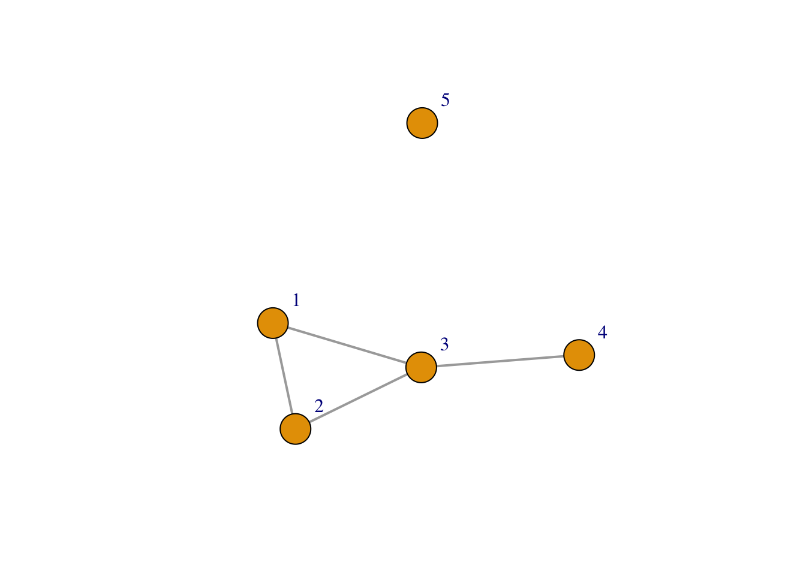
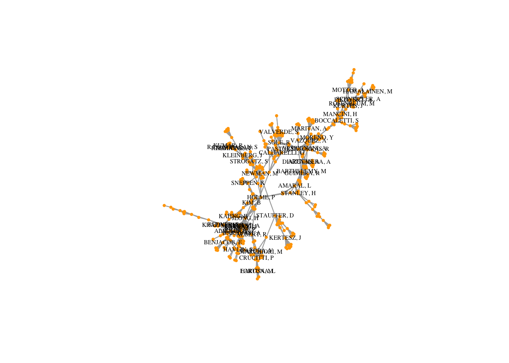
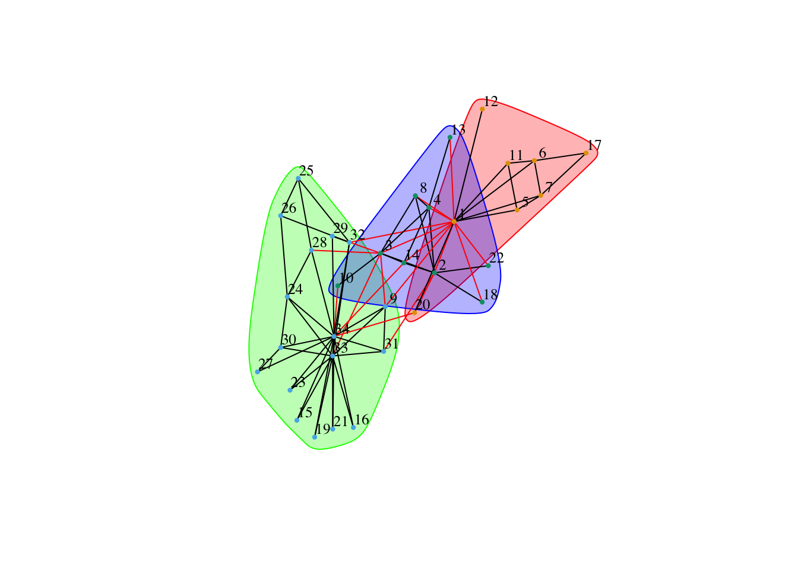

Chapter 2 Giới thiệu về khoa học mạng lưới
2.1 Các định nghĩa cơ bản
2.1.1 Định nghĩa mạng lưới
Một mạng lưới là một đồ thị toán học ký hiệu bởi \(G = G(E,V)\) bao gồm: - Một tập hợp các đỉnh (“vertex/node”) \(V\) - Một tập hợp các cạnh (“edge/link”): \(E\) gồm những cặp đỉnh trong \(V\)
Ví dụ sau biểu diễn một đồ thị gồm 5 đỉnh và 7 cạnh:
\(V = {1, 2, 3, 4, 5}\)
\(E = {(1, 2), (2, 3), (3, 1), (3, 4)}\) 
Các đỉnh thường được ký hiệu bởi số nguyên từ \(1\) đến \(n\): \(1,2,...,n\). Tập hợp cạnh \(E\) còn được gọi là danh sách cạnh.
Có thể biểu diễn mạng lưới theo một cách khác là ma trận kề \(A\) có chiều \(n \times n\). Như với đồ thị trên chúng ta có:
\[\begin{Bmatrix} 0 & 1 & 1 & 0 & 0 \\ 1 & 0 & 1 & 0 & 0 \\ 1 & 1 & 0 & 1 & 0 \\ 0 & 0 & 1 & 0 & 0 \\ 0 & 0 & 0 & 0 & 0 \\ \end{Bmatrix}\]Với các giá trị \(a_{ij}\) bằng 1 nếu có tồn tại một cạnh giữa \(i\) và \(j\) và bằng 0 nếu không.
Mạng lưới có thể có hướng (“directed”), khi đó cạnh \((i,j)\) được coi là đi từ đỉnh \(i\) tới đỉnh \(j\), nếu không thì gọi là không hướng.
Có thể có cạnh đi từ một đỉnh tới chính nó (“self-edge”).
Có thể có nhiều cạnh giữa 2 đỉnh (“multiedges”), khi đó giá trị \(a_{ij}\) là số nguyên bằng số cạnh giữa 2 đỉnh.
Một nhóm mạng lưới quan trọng khác là mạng có trong số (“weighted network”). Khi đó mỗi cạnh đều có một giá trị không âm và các giá trị \(a_{ij}\) của ma trận kề có cùng giá trị với trọng số tương ứng của cạnh.
Mạng lưới có tồn tại cạnh nối 2 đỉnh bất kỳ gọi là mạng đầy đủ (“complete graph”)
2.2 Các phép đo lường cơ bản
Dựa trên cấu trúc mạng lưới chúng ta có thể tính toán các phép đo cho đỉnh, cạnh hay toàn mạng lưới.
2.2.1 Bậc và phân phối bậc
Bậc (“degree”) của một đỉnh \(i\), ký hiệu \(k_i\), là tổng số cạnh đi tới nó. Với một mạng không hướng thì có thể tính bậc mỗi đỉnh bởi tổng của hàng \(i\) tương ứng của ma trận kề \(A\): \(k_i = \sum_{j = 1}^{n}a_{ij}\).
Cũng với mạng không hướng, nếu có \(m\) cạnh thì tổng số bậc của tất cả các đỉnh sẽ là \(2m\). Ví dụ như với mạng 500 sân bay lớn nhất của Mỹ trong hình (??) ta có các thông số sau:
| Measure | Value |
|---|---|
| Số đỉnh | 500.00 |
| Số cạnh | 2980.00 |
| Bậc TB | 5.96 |
Như vậy một sân bay trung bình chỉ có gần 6 đường bay nội địa? Con số trung bình này không phản ánh rõ bởi ở Mỹ có rất nhiều sân bay nhỏ chỉ kết nối với một vài sân bay chính gần đó. Có đến 74 sân bay chỉ kết nối duy nhất 1 sân bay khác (trong số 500 sân bay lớn), 107 sân bay kết nối với 2 sân bay khác, và sân bay kết nối nhiều nhất có 146 đường bay khác nhau, như thể hiện qua đồ thị tần số (histogram) dưới đây.
Chúng ta có thể thấy các mạng thực tế thường có phân bố bậc rất rộng và không đối xứng, với rất nhiều đỉnh có số bậc nhỏ và một số ít đỉnh có số bậc rất lớn. Các dữ liệu thực nghiệm cho thấy phần lớn các phân phối này có dạng hàm mũ ở phần đuôi, với số mũ từ thông thường từ 2-3.
(#fig:USAirport_500_deg)Bậc của mạng 500 sân bay tuân theo phân bố hàm mũ (phần đuôi) giống như nhiều mạng lưới thực tế khác
2.2.2 Đường đi và đường đi ngắn nhất
Đường đi (“path”) giữa hai đỉnh \(i\) và \(j\) là tập hợp các cạnh nối từ \(i\) tới \(j\). Giữa hai đỉnh bất kỳ có thể không tồn tại đường đi, hoặc tồn tại nhiều đường đi.
Ví dụ về một đường đi ngắn nhất giữa 2 sân bay (màu đỏ) là 2 cạnh màu xanh nước biển, đi qua một sân bay khác màu xanh lá cây:
Figure 2.1: Ví dụ về một đường đi ngắn nhất giữa 2 sân bay (màu đỏ), trung chuyển qua một sân bay khác (màu xanh)
- Đường đi ngắn nhất trung bình là trung bình của mọi đường đi ngăn nhất giữa hai đỉnh (nếu có). Đây là một phép đo quan trọng thể hiện sự kết nối. Với mạng 500 sân bay Mỹ là 2.9896902 hay gần 3, có nghĩa là trung bình để đi từ hai sân bay bất kỳ trên đất Mỹ cần đi 3 chuyến bay.
Một hiện tượng nổi tiếng “Six degrees of separation” phát hiện bởi Frigyes Karinthy, viết lại bởi John Guare chỉ ra hai người bất kỳ trong xã hội có thể kết nối với nhau chỉ qua trung bình 6 người trung gian khác (xem Wikipedia). Đây là một con số nhỏ ngạc nhiên vào thời trước, và được mô tả thành hiện tượng thế giới nhỏ (“the small-world effect”).
Trong một ví dụ khác, chúng ta có mạng lưới cộng tác xuất bản chung của các nhà khoa học mạng lưới vào năm 2006. Mạng lưới bao gồm 1589 nhà khoa học, trong đó thành phần lớn nhất liên kết 379 nhà khoa học:
 (chỉ những NKH có trên 15 liên kết mới hiển thị tên)
Với mạng lưới này, Đường đi ngắn nhất trung bình là 6.0418673 hay nói cách khác, nếu ở trong mạng lưới này, bạn muốn liên kết với bất kỳ NKH nào khác qua các quen biết (đã xuất bản chung) thì trung bình cần đến 6 đường đi (hay 5 NKH giới thiệu).
Một số phép đó khác liên quan đến đường đi và đường đi ngắn nhất bao gồm:
chiều của mạng lưới là giá trị lớn nhất của tất cả các đường đi ngắn nhất. Với mạng 500 sân bay Mỹ là 7.
Mạng lưới mà luôn tồn tại ít nhất một đường đi giữa hai đỉnh bất kỳ gọi là mạng kết nối. Mạng này không chứa đỉnh cô lập.
Một mạng lưới không kết nối có thể chia thành nhiều mạng kết nối rời rạc với nhau. Các mạng con kết nối này được gọi là các thành phần (“components”) của mạng ban đầu.
Thành phần có kích thước lớn nhất của một mạng lưới gọi là LCC (“Largest connected components”). (Với mạng kết nối thì LCC chính là mạng lưới)
2.2.3 Tính trung gian
Dựa trên đường đi ngăn nhất, tính trung gian (“betweenness”) của một đỉnh \(i\), \(b_i\) là tổng số đường đi ngăn nhất giữa hai đỉnh khác \(i\) mà đi qua \(i\). Tính trung gian là một phép đo rất quan trọng của mỗi đỉnh. Đỉnh có tính trung gian cao thường đóng vai trò kết nối cao trong một mạng lưới.
Hình vẽ dưới đây biểu diễn kích thước mỗi đỉnh bằng tính trung gian cho đồ thị 34 thành viên một câu lạc bộ karate do Wayne Zachary thu thập năm 1977 (một bộ dữ liệu rất phổ biến trong nghiên cứu mạng lưới trước đây):
 Có thể thấy ngoài các đỉnh trung tâm có số liên kết cao cũng có tính trung gian cao, một số đỉnh ở vùng tiếp giáp giữa các nhóm cũng có tính trung gian cao, mặc dù số bậc không quá cao.
Có thể thấy ngoài các đỉnh trung tâm có số liên kết cao cũng có tính trung gian cao, một số đỉnh ở vùng tiếp giáp giữa các nhóm cũng có tính trung gian cao, mặc dù số bậc không quá cao.
Với mạng có trọng số, mỗi đường đi ngắn nhất được tính theo trong số và tính trung gian trọng số là tổng giá trị của các đường đi ngắn nhất đi qua đỉnh.
2.3 Tính phân nhóm
Ngoài các tính chất đã kể trên của mạng lưới là 1) phân bố bậc dạng hàm mũ và 2) tính chất “small-world”, các mạng thực tế thường có sự phân nhóm ít nhiều khác nhau, đặc biệt là các mạng xã hội.
Ví dụ sau là sự phân nhóm theo thuật toán “greedy optimization” trên mạng lưới 379 nhà khoa học nói trên:
 Xác định nhóm trong mạng là một trong những bài toán quan trọng và có nhiều cách tiếp cận khác nhau. Tính phân nhóm ảnh hưởng quan trọng đến các quá trình động lực sau này của mạng lưới.
2.4 Các mô hình xây dựng mạng lưới phổ biến (to be continued)
Tài liệu Tham khảo: W. W. Zachary, An information flow model for conflict and fission in small groups, Journal of Anthropological Research 33, 452-473 (1977).
M. E. J. Newman, Finding community structure in networks using the eigenvectors of matrices, Preprint physics/0605087 (2006).